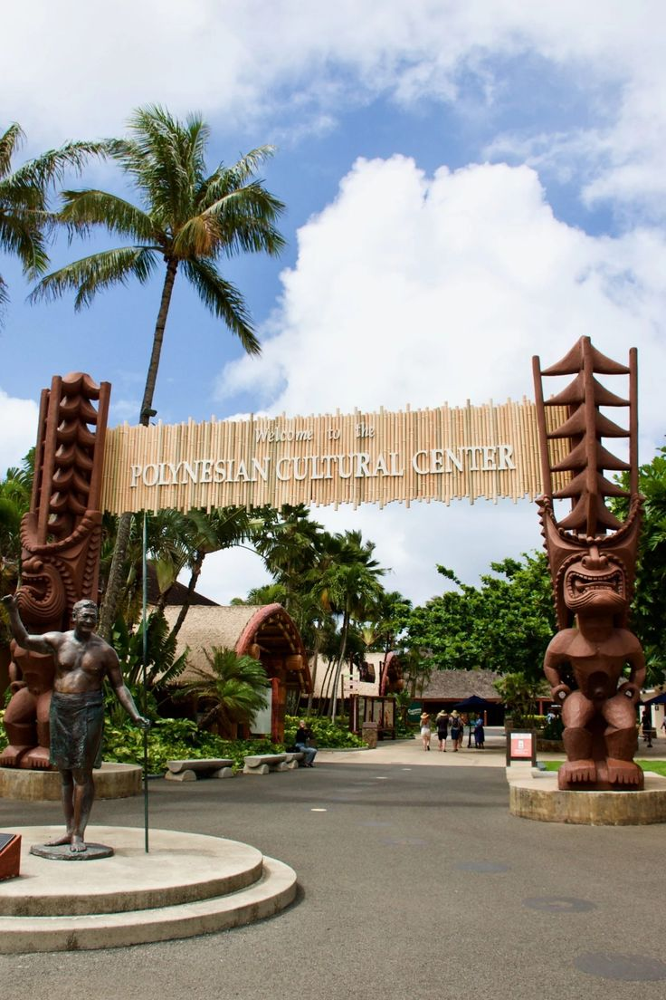
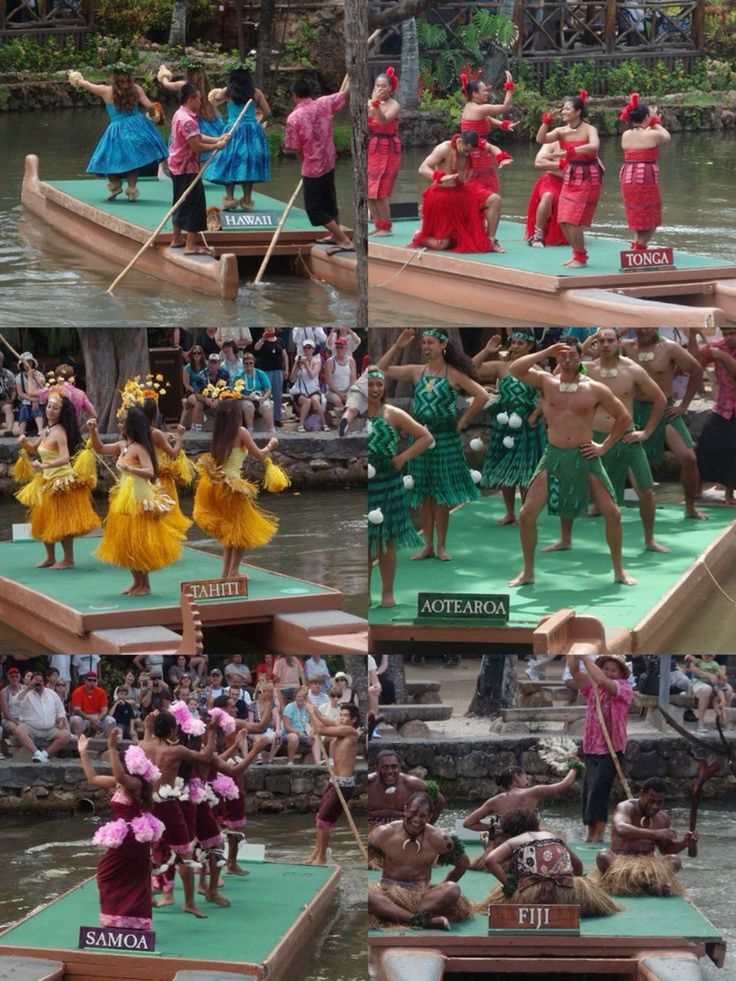

Polynesian Cultural Center
The Polynesian Cultural Center in Lāie on the North Shore of Oahu is an attraction unlike any other across Hawaii, as visitors have the opportunity to personally experience the cultures of six island archipelagos across the Pacific

Main entrance to PCC.

Six islands in PCC.